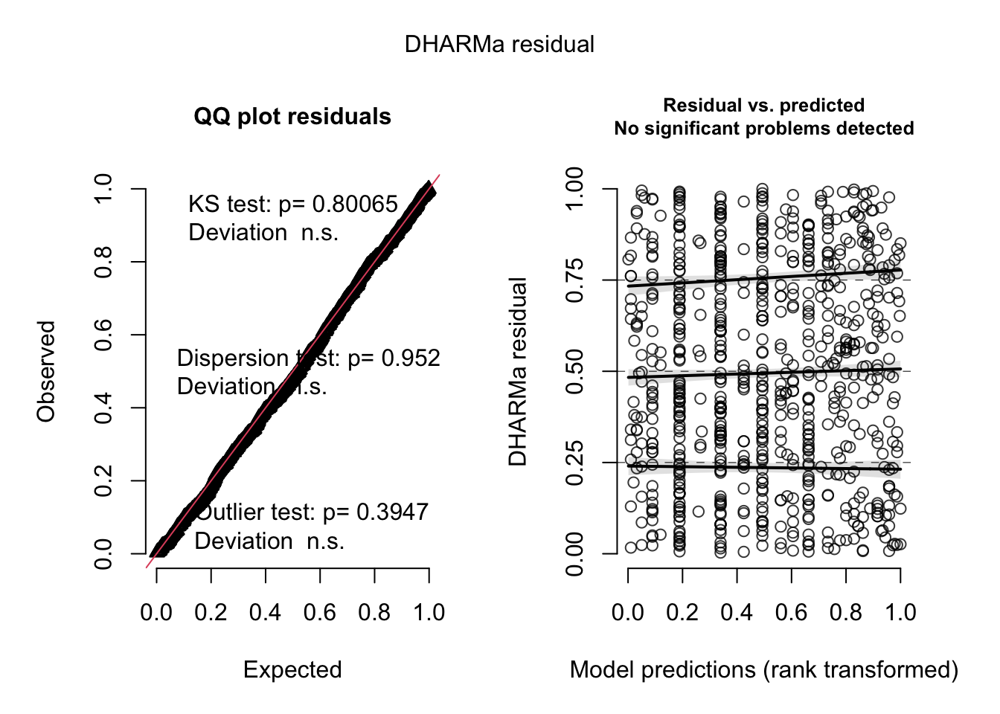
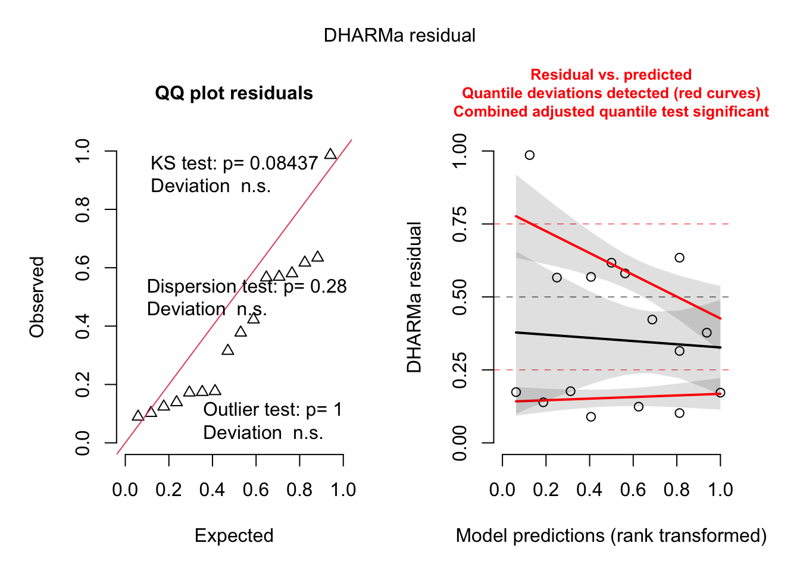
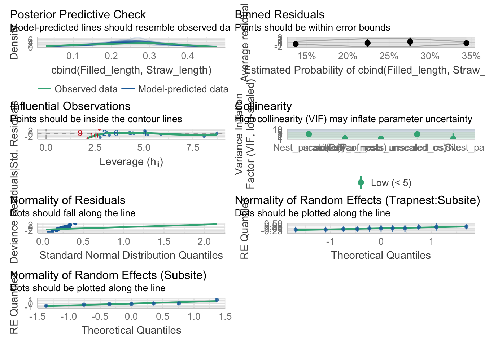

New_nests_os: number of new osmia nests for each trapnest and date combination.
New_nests_meg: number of new megachile nests for each trapnest and date combination.
Prop_filled: proportion of the straw filled with cells, used as a measure of investment into a nest.
Predictor variables:
Available_cavities_prior: number of available cavities that could have had a new nest built between visits.
Osmia_ps_prior: number of existing osmia in each trapnest per date, including pseudo nests.
Osmia_no_ps_prior: number of existing osmia in each trapnest per date, excluding pseudo nests.
Meg_ps_prior: number of existing megachile in each trapnest per date, including pseudo nests.
Meg_no_ps_prior: number of existing megachile in each trapnest per date, excluding pseudo nests.
Par_in_trapnest: number of parasites present in the trapnest when I log new bee nests (Bee_choice). #######
Additional variables:
Good_days: number of days between visits with good enough weather for bee activity.
Day_of_year: the day of the year, a stand in for date.
Site: three sites in total.
Subsite: six subsites for each site, unique to each site.
Trapnest: 72 trapnests total, ach subsite contains three, unique to each subsite.
Nesting per Available Cavities
# MODEL 1 ### New nests per available cavities Osmia ###mod_choice_cav_os <-glmer(cbind(New_nests_os, Available_cavities_prior - New_nests_sum) ~scale(Available_cavities_prior) +scale(Good_days) +scale(Day_of_year) + Site + (1|Subsite/Trapnest), data = nesting_os_xs, family = binomial) plot(simulateResiduals(mod_choice_cav_os)) # great
check_model(mod_choice_cav_os) # fine
testDispersion(mod_choice_cav_os, type ='DHARMa') # good
DHARMa nonparametric dispersion test via sd of residuals fitted vs.
simulated
data: simulationOutput
dispersion = 1.1799, p-value = 0.496
alternative hypothesis: two.sided
testZeroInflation(mod_choice_cav_os) # good
DHARMa zero-inflation test via comparison to expected zeros with
simulation under H0 = fitted model
data: simulationOutput
ratioObsSim = 1.0203, p-value = 0.464
alternative hypothesis: two.sided
summary(mod_choice_cav_os) # Site significant
Generalized linear mixed model fit by maximum likelihood (Laplace
Approximation) [glmerMod]
Family: binomial ( logit )
Formula: cbind(New_nests_os, Available_cavities_prior - New_nests_sum) ~
scale(Available_cavities_prior) + scale(Good_days) + scale(Day_of_year) +
Site + (1 | Subsite/Trapnest)
Data: nesting_os_xs
AIC BIC logLik deviance df.resid
1110.5 1152.9 -547.3 1094.5 1468
Scaled residuals:
Min 1Q Median 3Q Max
-0.9602 -0.3634 -0.1721 -0.1084 7.8645
Random effects:
Groups Name Variance Std.Dev.
Trapnest:Subsite (Intercept) 1.2655 1.1249
Subsite (Intercept) 0.8597 0.9272
Number of obs: 1476, groups: Trapnest:Subsite, 72; Subsite, 24
Fixed effects:
Estimate Std. Error z value Pr(>|z|)
(Intercept) -5.25218 0.45314 -11.591 < 2e-16 ***
scale(Available_cavities_prior) -0.25270 0.18829 -1.342 0.17956
scale(Good_days) 0.11416 0.07537 1.515 0.12985
scale(Day_of_year) -0.15222 0.15627 -0.974 0.33003
SiteCP -2.75014 0.99162 -2.773 0.00555 **
SiteNN 0.02479 0.68213 0.036 0.97101
---
Signif. codes: 0 '***' 0.001 '**' 0.01 '*' 0.05 '.' 0.1 ' ' 1
Correlation of Fixed Effects:
(Intr) s(A__) sc(G_) s(D__) SiteCP
scl(Avlb__) -0.136
scl(Gd_dys) -0.057 -0.011
scl(Dy_f_y) -0.250 0.319 0.139
SiteCP -0.240 -0.127 -0.023 -0.221
SiteNN -0.653 0.064 0.045 0.281 0.149
# anova to see site differencessave(mod_choice_cav_os, file='Models/mod_choice_cav_os.Rdata') # Plot modelggpredict(mod_choice_cav_os, c('Available_cavities_prior')) %>%plot(rawdata =TRUE, jitter = .04)
Raw data not available.
# MODEL 2### New nests per available cavities Megachile ###mod_choice_cav_meg <-glmer(cbind(New_nests_meg, Available_cavities_prior - New_nests_sum) ~scale(Available_cavities_prior) +scale(Good_days) +scale(Day_of_year) + Site + (1|Subsite/Trapnest), data = nesting_meg_xs, family = binomial) plot(simulateResiduals(mod_choice_cav_meg)) # great
testDispersion(mod_choice_cav_meg, type ='DHARMa') # good
DHARMa nonparametric dispersion test via sd of residuals fitted vs.
simulated
data: simulationOutput
dispersion = 0.10287, p-value = 0.152
alternative hypothesis: two.sided
testZeroInflation(mod_choice_cav_meg) # good
DHARMa zero-inflation test via comparison to expected zeros with
simulation under H0 = fitted model
data: simulationOutput
ratioObsSim = 1.0213, p-value = 0.352
alternative hypothesis: two.sided
check_model(mod_choice_cav_meg) # fine
summary(mod_choice_cav_meg) # Day of year and Site significant
Generalized linear mixed model fit by maximum likelihood (Laplace
Approximation) [glmerMod]
Family: binomial ( logit )
Formula: cbind(New_nests_meg, Available_cavities_prior - New_nests_sum) ~
scale(Available_cavities_prior) + scale(Good_days) + scale(Day_of_year) +
Site + (1 | Subsite/Trapnest)
Data: nesting_meg_xs
AIC BIC logLik deviance df.resid
422.9 465.3 -203.4 406.9 1468
Scaled residuals:
Min 1Q Median 3Q Max
-1.1805 -0.0799 -0.0278 -0.0130 7.6527
Random effects:
Groups Name Variance Std.Dev.
Trapnest:Subsite (Intercept) 7.562 2.750
Subsite (Intercept) 3.046 1.745
Number of obs: 1476, groups: Trapnest:Subsite, 72; Subsite, 24
Fixed effects:
Estimate Std. Error z value Pr(>|z|)
(Intercept) -8.10467 1.19187 -6.800 1.05e-11 ***
scale(Available_cavities_prior) -0.15750 0.39803 -0.396 0.6923
scale(Good_days) 0.03492 0.10884 0.321 0.7483
scale(Day_of_year) 1.74823 0.30811 5.674 1.39e-08 ***
SiteCP -3.68861 1.48869 -2.478 0.0132 *
SiteNN -2.37725 1.63055 -1.458 0.1449
---
Signif. codes: 0 '***' 0.001 '**' 0.01 '*' 0.05 '.' 0.1 ' ' 1
Correlation of Fixed Effects:
(Intr) s(A__) sc(G_) s(D__) SiteCP
scl(Avlb__) -0.256
scl(Gd_dys) 0.062 -0.090
scl(Dy_f_y) -0.329 0.312 -0.290
SiteCP -0.173 -0.148 0.054 -0.237
SiteNN -0.275 0.010 0.001 0.049 0.250
# anovasave(mod_choice_cav_meg, file='Models/mod_choice_cav_meg.Rdata')# Plot modelggpredict(mod_choice_cav_os, c('Available_cavities_prior')) %>%plot(rawdata =TRUE, jitter = .04) # + labs(x = 'Available cavities', y = 'Presence of new nest for each visit')
Raw data not available.
Nesting per Conspecific Presence
# MODEL 3 ### New nests per conspecifics Osmia, with pseudo ###mod_choice_consp_os_ps <-glmer(cbind(New_nests_os, Available_cavities_prior - New_nests_sum) ~scale(Osmia_ps_prior) +scale(Good_days) +scale(Day_of_year) + Site + (1|Subsite/Trapnest), data = nesting_os_xs, family = binomial) # ignore boundary singular warning, means little to no influence of random effects
boundary (singular) fit: see help('isSingular')
plot(simulateResiduals(mod_choice_consp_os_ps)) # fine
check_model(mod_choice_consp_os_ps) # fine
testDispersion(mod_choice_consp_os_ps, type ='DHARMa')
DHARMa nonparametric dispersion test via sd of residuals fitted vs.
simulated
data: simulationOutput
dispersion = 0.5032, p-value = 0.264
alternative hypothesis: two.sided
testZeroInflation(mod_choice_consp_os_ps) # zero-inflation, but not detrimental
DHARMa zero-inflation test via comparison to expected zeros with
simulation under H0 = fitted model
data: simulationOutput
ratioObsSim = 1.0588, p-value = 0.016
alternative hypothesis: two.sided
summary(mod_choice_consp_os_ps) # more osmia nests when there's higher osmia densities
Generalized linear mixed model fit by maximum likelihood (Laplace
Approximation) [glmerMod]
Family: binomial ( logit )
Formula: cbind(New_nests_os, Available_cavities_prior - New_nests_sum) ~
scale(Osmia_ps_prior) + scale(Good_days) + scale(Day_of_year) +
Site + (1 | Subsite/Trapnest)
Data: nesting_os_xs
AIC BIC logLik deviance df.resid
1050.7 1093.1 -517.3 1034.7 1468
Scaled residuals:
Min 1Q Median 3Q Max
-1.1819 -0.3657 -0.1499 -0.0677 7.8821
Random effects:
Groups Name Variance Std.Dev.
Trapnest:Subsite (Intercept) 2.322 1.524
Subsite (Intercept) 0.000 0.000
Number of obs: 1476, groups: Trapnest:Subsite, 72; Subsite, 24
Fixed effects:
Estimate Std. Error z value Pr(>|z|)
(Intercept) -5.36374 0.38480 -13.939 < 2e-16 ***
scale(Osmia_ps_prior) 1.72121 0.29568 5.821 5.84e-09 ***
scale(Good_days) 0.13573 0.07653 1.774 0.0761 .
scale(Day_of_year) -0.10198 0.13434 -0.759 0.4478
SiteCP -1.44559 0.95729 -1.510 0.1310
SiteNN -0.78408 0.53469 -1.466 0.1425
---
Signif. codes: 0 '***' 0.001 '**' 0.01 '*' 0.05 '.' 0.1 ' ' 1
Correlation of Fixed Effects:
(Intr) s(O__) sc(G_) s(D__) SiteCP
scl(Osm_p_) -0.432
scl(Gd_dys) -0.049 0.072
scl(Dy_f_y) 0.035 0.091 0.131
SiteCP -0.354 0.190 -0.008 -0.173
SiteNN -0.494 -0.090 0.006 0.100 0.163
optimizer (Nelder_Mead) convergence code: 0 (OK)
boundary (singular) fit: see help('isSingular')
Data were 'prettified'. Consider using `terms="Osmia_ps_prior [all]"` to
get smooth plots.
Raw data not available.
# MODEL 4 ### New nests per conspecifics Osmia, without pseudo ###mod_choice_consp_os_no_ps <-glmer(cbind(New_nests_os, Available_cavities_prior - New_nests_sum) ~scale(Osmia_no_ps_prior) +scale(Good_days) +scale(Day_of_year) + Site + (1|Subsite/Trapnest), data = nesting_os_xs, family =binomial())
Warning in checkConv(attr(opt, "derivs"), opt$par, ctrl = control$checkConv, :
Model failed to converge with max|grad| = 0.0521047 (tol = 0.002, component 1)
plot(simulateResiduals(mod_choice_consp_os_no_ps)) # fine
DHARMa:testOutliers with type = binomial may have inflated Type I error rates for integer-valued distributions. To get a more exact result, it is recommended to re-run testOutliers with type = 'bootstrap'. See ?testOutliers for details
check_model(mod_choice_consp_os_no_ps) # good
testDispersion(mod_choice_consp_os_no_ps, type ='DHARMa') # some overdispersion, not detrimental
DHARMa nonparametric dispersion test via sd of residuals fitted vs.
simulated
data: simulationOutput
dispersion = 1.7465, p-value < 2.2e-16
alternative hypothesis: two.sided
testZeroInflation(mod_choice_consp_os_no_ps) # some zero inflation
DHARMa zero-inflation test via comparison to expected zeros with
simulation under H0 = fitted model
data: simulationOutput
ratioObsSim = 1.0207, p-value = 0.04
alternative hypothesis: two.sided
summary(mod_choice_consp_os_no_ps) #### HELP
Generalized linear mixed model fit by maximum likelihood (Laplace
Approximation) [glmerMod]
Family: binomial ( logit )
Formula: cbind(New_nests_os, Available_cavities_prior - New_nests_sum) ~
scale(Osmia_no_ps_prior) + scale(Good_days) + scale(Day_of_year) +
Site + (1 | Subsite/Trapnest)
Data: nesting_os_xs
AIC BIC logLik deviance df.resid
1043.6 1086.0 -513.8 1027.6 1468
Scaled residuals:
Min 1Q Median 3Q Max
-1.1730 -0.3569 -0.1794 -0.0939 9.8011
Random effects:
Groups Name Variance Std.Dev.
Trapnest:Subsite (Intercept) 3.073e-01 0.554336
Subsite (Intercept) 8.804e-05 0.009383
Number of obs: 1476, groups: Trapnest:Subsite, 72; Subsite, 24
Fixed effects:
Estimate Std. Error z value Pr(>|z|)
(Intercept) -5.012953 0.001739 -2882.17 <2e-16 ***
scale(Osmia_no_ps_prior) 0.643628 0.001737 370.51 <2e-16 ***
scale(Good_days) 0.161139 0.001738 92.74 <2e-16 ***
scale(Day_of_year) -0.905303 0.001738 -520.75 <2e-16 ***
SiteCP -1.303192 0.001738 -749.95 <2e-16 ***
SiteNN -0.609947 0.001739 -350.84 <2e-16 ***
---
Signif. codes: 0 '***' 0.001 '**' 0.01 '*' 0.05 '.' 0.1 ' ' 1
Correlation of Fixed Effects:
(Intr) s(O___ sc(G_) s(D__) SiteCP
scl(Osm___) 0.000
scl(Gd_dys) 0.000 0.000
scl(Dy_f_y) 0.000 0.000 0.000
SiteCP 0.000 0.000 0.000 0.000
SiteNN 0.000 0.000 0.000 -0.001 0.000
optimizer (Nelder_Mead) convergence code: 0 (OK)
Model failed to converge with max|grad| = 0.0521047 (tol = 0.002, component 1)
# MODEL 5### New nests per conspecifics Megachile, with pseudo ###mod_choice_consp_meg_ps <-glmer(cbind(New_nests_meg, Available_cavities_prior - New_nests_sum) ~scale(Meg_ps_prior) +scale(Good_days) +scale(Day_of_year) + Site + (1|Subsite/Trapnest), data = nesting_meg_xs, family =binomial())plot(simulateResiduals(mod_choice_consp_meg_ps)) # great
check_model(mod_choice_consp_meg_ps) # good
testDispersion(mod_choice_consp_meg_ps, type ='DHARMa') # good
DHARMa nonparametric dispersion test via sd of residuals fitted vs.
simulated
data: simulationOutput
dispersion = 0.09139, p-value = 0.136
alternative hypothesis: two.sided
testZeroInflation(mod_choice_consp_meg_ps) # good
DHARMa zero-inflation test via comparison to expected zeros with
simulation under H0 = fitted model
data: simulationOutput
ratioObsSim = 1.0243, p-value = 0.256
alternative hypothesis: two.sided
summary(mod_choice_consp_meg_ps) # Day of year and Site significant
Generalized linear mixed model fit by maximum likelihood (Laplace
Approximation) [glmerMod]
Family: binomial ( logit )
Formula: cbind(New_nests_meg, Available_cavities_prior - New_nests_sum) ~
scale(Meg_ps_prior) + scale(Good_days) + scale(Day_of_year) +
Site + (1 | Subsite/Trapnest)
Data: nesting_meg_xs
AIC BIC logLik deviance df.resid
422.4 464.8 -203.2 406.4 1468
Scaled residuals:
Min 1Q Median 3Q Max
-1.1712 -0.0799 -0.0262 -0.0125 7.5784
Random effects:
Groups Name Variance Std.Dev.
Trapnest:Subsite (Intercept) 8.005 2.829
Subsite (Intercept) 3.525 1.878
Number of obs: 1476, groups: Trapnest:Subsite, 72; Subsite, 24
Fixed effects:
Estimate Std. Error z value Pr(>|z|)
(Intercept) -8.26631 1.20392 -6.866 6.60e-12 ***
scale(Meg_ps_prior) 0.34601 0.42558 0.813 0.4162
scale(Good_days) 0.04345 0.10984 0.396 0.6924
scale(Day_of_year) 1.69057 0.31247 5.410 6.29e-08 ***
SiteCP -3.90178 1.53791 -2.537 0.0112 *
SiteNN -2.18223 1.71245 -1.274 0.2025
---
Signif. codes: 0 '***' 0.001 '**' 0.01 '*' 0.05 '.' 0.1 ' ' 1
Correlation of Fixed Effects:
(Intr) s(M__) sc(G_) s(D__) SiteCP
scl(Mg_ps_) -0.102
scl(Gd_dys) 0.021 0.140
scl(Dy_f_y) -0.202 -0.358 -0.302
SiteCP -0.223 -0.134 0.020 -0.134
SiteNN -0.303 0.136 0.020 -0.004 0.237
# MODEL 6### New nests per conspecifics Megachile, without pseudo ###mod_choice_consp_meg_no_ps <-glmer(cbind(New_nests_meg, Available_cavities_prior - New_nests_sum) ~scale(Meg_no_ps_prior) +scale(Good_days) +scale(Day_of_year) + Site + (1|Subsite/Trapnest), data = nesting_meg_xs, family =binomial())plot(simulateResiduals(mod_choice_consp_meg_no_ps)) # great
check_model(mod_choice_consp_meg_no_ps) # fine
testDispersion(mod_choice_consp_meg_no_ps, type ='DHARMa') # good
DHARMa nonparametric dispersion test via sd of residuals fitted vs.
simulated
data: simulationOutput
dispersion = 0.10354, p-value = 0.168
alternative hypothesis: two.sided
testZeroInflation(mod_choice_consp_meg_no_ps) # good
DHARMa zero-inflation test via comparison to expected zeros with
simulation under H0 = fitted model
data: simulationOutput
ratioObsSim = 1.021, p-value = 0.336
alternative hypothesis: two.sided
summary(mod_choice_consp_meg_no_ps) # Day of year and Site significant
Generalized linear mixed model fit by maximum likelihood (Laplace
Approximation) [glmerMod]
Family: binomial ( logit )
Formula: cbind(New_nests_meg, Available_cavities_prior - New_nests_sum) ~
scale(Meg_no_ps_prior) + scale(Good_days) + scale(Day_of_year) +
Site + (1 | Subsite/Trapnest)
Data: nesting_meg_xs
AIC BIC logLik deviance df.resid
422.9 465.2 -203.4 406.9 1468
Scaled residuals:
Min 1Q Median 3Q Max
-1.1682 -0.0814 -0.0289 -0.0137 7.5486
Random effects:
Groups Name Variance Std.Dev.
Trapnest:Subsite (Intercept) 7.351 2.711
Subsite (Intercept) 2.865 1.693
Number of obs: 1476, groups: Trapnest:Subsite, 72; Subsite, 24
Fixed effects:
Estimate Std. Error z value Pr(>|z|)
(Intercept) -8.03146 1.22414 -6.561 5.35e-11 ***
scale(Meg_no_ps_prior) 0.03419 0.08043 0.425 0.671
scale(Good_days) 0.04609 0.11383 0.405 0.686
scale(Day_of_year) 1.66230 0.41048 4.050 5.13e-05 ***
SiteCP -3.61165 1.51320 -2.387 0.017 *
SiteNN -2.37378 1.60672 -1.477 0.140
---
Signif. codes: 0 '***' 0.001 '**' 0.01 '*' 0.05 '.' 0.1 ' ' 1
Correlation of Fixed Effects:
(Intr) s(M___ sc(G_) s(D__) SiteCP
scl(Mg_n__) 0.398
scl(Gd_dys) 0.157 0.313
scl(Dy_f_y) -0.456 -0.708 -0.403
SiteCP -0.083 0.270 0.121 -0.329
SiteNN -0.245 0.012 0.005 0.029 0.246
# Relation between parasites and aggregation densities# MODEL 7# Relation between parasites and aggregation densities, with pseudomod_par_agg_ps <-glmer(Cell_parasitized ~scale(Osmia_ps_post) +scale(Day_of_year) + Site + (1|Subsite/Trapnest/Nest_ID), data = nesting_cells_os, family = binomial)
boundary (singular) fit: see help('isSingular')
plot(simulateResiduals(mod_par_agg_ps)) # good
check_model(mod_par_agg_ps) # fine
testDispersion(mod_par_agg_ps, type ='DHARMa') # good
DHARMa nonparametric dispersion test via sd of residuals fitted vs.
simulated
data: simulationOutput
dispersion = 0.86531, p-value = 0.336
alternative hypothesis: two.sided
testZeroInflation(mod_par_agg_ps) # good
DHARMa zero-inflation test via comparison to expected zeros with
simulation under H0 = fitted model
data: simulationOutput
ratioObsSim = 1.0374, p-value = 0.36
alternative hypothesis: two.sided
summary(mod_par_agg_ps) # no detected effects
Warning in vcov.merMod(object, use.hessian = use.hessian): variance-covariance matrix computed from finite-difference Hessian is
not positive definite or contains NA values: falling back to var-cov estimated from RX
Warning in vcov.merMod(object, correlation = correlation, sigm = sig): variance-covariance matrix computed from finite-difference Hessian is
not positive definite or contains NA values: falling back to var-cov estimated from RX
Generalized linear mixed model fit by maximum likelihood (Laplace
Approximation) [glmerMod]
Family: binomial ( logit )
Formula: Cell_parasitized ~ scale(Osmia_ps_post) + scale(Day_of_year) +
Site + (1 | Subsite/Trapnest/Nest_ID)
Data: nesting_cells_os
AIC BIC logLik deviance df.resid
488.4 525.0 -236.2 472.4 710
Scaled residuals:
Min 1Q Median 3Q Max
-1.6864 -0.1793 -0.1242 -0.1005 3.4672
Random effects:
Groups Name Variance Std.Dev.
Nest_ID:(Trapnest:Subsite) (Intercept) 7.364 2.714
Trapnest:Subsite (Intercept) 0.000 0.000
Subsite (Intercept) 0.000 0.000
Number of obs: 718, groups:
Nest_ID:(Trapnest:Subsite), 130; Trapnest:Subsite, 30; Subsite, 15
Fixed effects:
Estimate Std. Error z value Pr(>|z|)
(Intercept) -3.305e+00 3.896e-01 -8.484 <2e-16 ***
scale(Osmia_ps_post) -2.581e-01 3.017e-01 -0.856 0.3922
scale(Day_of_year) 1.891e-01 3.116e-01 0.607 0.5439
SiteCP -2.996e+01 2.624e+06 0.000 1.0000
SiteNN 1.346e+00 6.948e-01 1.938 0.0527 .
---
Signif. codes: 0 '***' 0.001 '**' 0.01 '*' 0.05 '.' 0.1 ' ' 1
Correlation of Fixed Effects:
(Intr) s(O__) s(D__) SiteCP
scl(Osm_p_) 0.033
scl(Dy_f_y) 0.043 0.091
SiteCP 0.000 0.000 0.000
SiteNN -0.570 -0.016 -0.243 0.000
optimizer (Nelder_Mead) convergence code: 0 (OK)
boundary (singular) fit: see help('isSingular')
# MODEL 8# Relation between parasites and aggregation densities, without pseudomod_par_agg_no_ps <-glmer(Cell_parasitized ~scale(Osmia_no_ps_post) +scale(Day_of_year) + Site + (1|Subsite/Trapnest/Nest_ID), data = nesting_cells_os, family = binomial)
boundary (singular) fit: see help('isSingular')
plot(simulateResiduals(mod_par_agg_no_ps)) # good
check_model(mod_par_agg_no_ps) # fine
testDispersion(mod_par_agg_no_ps, type ='DHARMa') # good
DHARMa nonparametric dispersion test via sd of residuals fitted vs.
simulated
data: simulationOutput
dispersion = 0.86335, p-value = 0.368
alternative hypothesis: two.sided
testZeroInflation(mod_par_agg_no_ps) # good
DHARMa zero-inflation test via comparison to expected zeros with
simulation under H0 = fitted model
data: simulationOutput
ratioObsSim = 1.0384, p-value = 0.36
alternative hypothesis: two.sided
summary(mod_par_agg_no_ps) # no detected effects
Warning in vcov.merMod(object, use.hessian = use.hessian): variance-covariance matrix computed from finite-difference Hessian is
not positive definite or contains NA values: falling back to var-cov estimated from RX
Warning in vcov.merMod(object, use.hessian = use.hessian): variance-covariance matrix computed from finite-difference Hessian is
not positive definite or contains NA values: falling back to var-cov estimated from RX
Generalized linear mixed model fit by maximum likelihood (Laplace
Approximation) [glmerMod]
Family: binomial ( logit )
Formula: Cell_parasitized ~ scale(Osmia_no_ps_post) + scale(Day_of_year) +
Site + (1 | Subsite/Trapnest/Nest_ID)
Data: nesting_cells_os
AIC BIC logLik deviance df.resid
488.6 525.2 -236.3 472.6 710
Scaled residuals:
Min 1Q Median 3Q Max
-1.6776 -0.1806 -0.1236 -0.1053 3.4883
Random effects:
Groups Name Variance Std.Dev.
Nest_ID:(Trapnest:Subsite) (Intercept) 7.282e+00 2.699e+00
Trapnest:Subsite (Intercept) 0.000e+00 0.000e+00
Subsite (Intercept) 5.035e-09 7.096e-05
Number of obs: 718, groups:
Nest_ID:(Trapnest:Subsite), 130; Trapnest:Subsite, 30; Subsite, 15
Fixed effects:
Estimate Std. Error z value Pr(>|z|)
(Intercept) -3.2574 0.3887 -8.380 <2e-16 ***
scale(Osmia_no_ps_post) -0.1890 0.2633 -0.718 0.4730
scale(Day_of_year) 0.2498 0.3114 0.802 0.4225
SiteCP -20.5288 22551.5422 -0.001 0.9993
SiteNN 1.2587 0.6987 1.801 0.0716 .
---
Signif. codes: 0 '***' 0.001 '**' 0.01 '*' 0.05 '.' 0.1 ' ' 1
Correlation of Fixed Effects:
(Intr) s(O___ s(D__) SiteCP
scl(Osm___) -0.080
scl(Dy_f_y) 0.050 -0.161
SiteCP 0.000 0.000 0.000
SiteNN -0.572 0.132 -0.260 0.000
optimizer (Nelder_Mead) convergence code: 0 (OK)
boundary (singular) fit: see help('isSingular')
# MODEL 9# Relation between parasites and aggregation densities, unsealedmod_par_agg_unsealed_os <-glmer(Cell_parasitized ~scale(Sum_unsealed_os) +scale(Day_of_year) + Site + (1|Subsite/Trapnest/Nest_ID), data = nesting_cells_os, family = binomial)
boundary (singular) fit: see help('isSingular')
plot(simulateResiduals(mod_par_agg_unsealed_os)) # good
check_model(mod_par_agg_unsealed_os) # fine
testDispersion(mod_par_agg_unsealed_os, type ='DHARMa') # good
DHARMa nonparametric dispersion test via sd of residuals fitted vs.
simulated
data: simulationOutput
dispersion = 0.86514, p-value = 0.304
alternative hypothesis: two.sided
testZeroInflation(mod_par_agg_unsealed_os) # good
DHARMa zero-inflation test via comparison to expected zeros with
simulation under H0 = fitted model
data: simulationOutput
ratioObsSim = 1.0375, p-value = 0.32
alternative hypothesis: two.sided
summary(mod_par_agg_unsealed_os) ### HELP warning
Warning in vcov.merMod(object, use.hessian = use.hessian): variance-covariance matrix computed from finite-difference Hessian is
not positive definite or contains NA values: falling back to var-cov estimated from RX
Warning in vcov.merMod(object, use.hessian = use.hessian): variance-covariance matrix computed from finite-difference Hessian is
not positive definite or contains NA values: falling back to var-cov estimated from RX
Generalized linear mixed model fit by maximum likelihood (Laplace
Approximation) [glmerMod]
Family: binomial ( logit )
Formula: Cell_parasitized ~ scale(Sum_unsealed_os) + scale(Day_of_year) +
Site + (1 | Subsite/Trapnest/Nest_ID)
Data: nesting_cells_os
AIC BIC logLik deviance df.resid
485.8 522.4 -234.9 469.8 710
Scaled residuals:
Min 1Q Median 3Q Max
-2.0376 -0.1857 -0.1288 -0.1002 3.7717
Random effects:
Groups Name Variance Std.Dev.
Nest_ID:(Trapnest:Subsite) (Intercept) 7.029 2.651
Trapnest:Subsite (Intercept) 0.000 0.000
Subsite (Intercept) 0.000 0.000
Number of obs: 718, groups:
Nest_ID:(Trapnest:Subsite), 130; Trapnest:Subsite, 30; Subsite, 15
Fixed effects:
Estimate Std. Error z value Pr(>|z|)
(Intercept) -3.315e+00 3.864e-01 -8.580 <2e-16 ***
scale(Sum_unsealed_os) -4.360e-01 2.427e-01 -1.796 0.0725 .
scale(Day_of_year) 6.640e-02 3.184e-01 0.209 0.8348
SiteCP -8.773e+01 1.794e+07 0.000 1.0000
SiteNN 1.454e+00 6.902e-01 2.106 0.0352 *
---
Signif. codes: 0 '***' 0.001 '**' 0.01 '*' 0.05 '.' 0.1 ' ' 1
Correlation of Fixed Effects:
(Intr) s(S__) s(D__) SiteCP
scl(Sm_ns_) 0.142
scl(Dy_f_y) 0.081 0.263
SiteCP 0.000 0.000 0.000
SiteNN -0.577 -0.131 -0.272 0.000
optimizer (Nelder_Mead) convergence code: 0 (OK)
boundary (singular) fit: see help('isSingular')
# MODEL 10# How the presence of parasites effects nesting preferences, with pseudomod_choice_par_ps_os <-glmer(cbind(New_nests_os, Available_cavities_prior - New_nests_sum) ~scale(Par_nests_unsealed_os) *scale(Osmia_ps_prior) +scale(Good_days) +scale(Day_of_year) + Site + (1|Subsite/Trapnest), data = nesting, family = binomial) ### MODEL FAILED TO CONVERGE
Warning in checkConv(attr(opt, "derivs"), opt$par, ctrl = control$checkConv, :
Model failed to converge with max|grad| = 0.0099852 (tol = 0.002, component 1)
plot(simulateResiduals(mod_choice_par_ps_os)) # help
DHARMa:testOutliers with type = binomial may have inflated Type I error rates for integer-valued distributions. To get a more exact result, it is recommended to re-run testOutliers with type = 'bootstrap'. See ?testOutliers for details
check_model(mod_choice_par_ps_os) # HELP
testDispersion(mod_choice_par_ps_os, type ='DHARMa') #
DHARMa nonparametric dispersion test via sd of residuals fitted vs.
simulated
data: simulationOutput
dispersion = 0.10151, p-value = 0.008
alternative hypothesis: two.sided
testZeroInflation(mod_choice_par_ps_os) #
DHARMa zero-inflation test via comparison to expected zeros with
simulation under H0 = fitted model
data: simulationOutput
ratioObsSim = 1.0796, p-value = 0.032
alternative hypothesis: two.sided
summary(mod_choice_par_ps_os) # almost everything sig, how to interpret interaction?
interact_plot(mod_choice_par_ps_os, pred = Osmia_ps_prior, modx = Par_nests_unsealed_os, data = nesting)
Warning: -0.257946227875293 is outside the observed range of
Par_nests_unsealed_os
# Model 11# How the presence of parasites effects nesting preferences, without pseudomod_choice_par_no_ps_os <-glmer(cbind(New_nests_os, Available_cavities_prior - New_nests_sum) ~scale(Par_nests_unsealed_os) *scale(Osmia_no_ps_prior) +scale(Good_days) +scale(Day_of_year) + Site + (1|Subsite/Trapnest), data = nesting, family = binomial)
Warning in checkConv(attr(opt, "derivs"), opt$par, ctrl = control$checkConv, :
Model failed to converge with max|grad| = 0.0399156 (tol = 0.002, component 1)
plot(simulateResiduals(mod_choice_par_no_ps_os)) # fine
DHARMa:testOutliers with type = binomial may have inflated Type I error rates for integer-valued distributions. To get a more exact result, it is recommended to re-run testOutliers with type = 'bootstrap'. See ?testOutliers for details
check_model(mod_choice_par_no_ps_os) # HELP
testDispersion(mod_choice_par_no_ps_os, type ='DHARMa') # fine
DHARMa nonparametric dispersion test via sd of residuals fitted vs.
simulated
data: simulationOutput
dispersion = 0.21707, p-value = 0.344
alternative hypothesis: two.sided
testZeroInflation(mod_choice_par_no_ps_os) # fine
DHARMa zero-inflation test via comparison to expected zeros with
simulation under H0 = fitted model
data: simulationOutput
ratioObsSim = 1.0176, p-value = 0.64
alternative hypothesis: two.sided
summary(mod_choice_par_no_ps_os) # almost everything sig
interact_plot(mod_choice_par_no_ps_os, pred = Osmia_no_ps_prior, modx = Par_nests_unsealed_os, data = nesting)
Warning: -0.257946227875293 is outside the observed range of
Par_nests_unsealed_os
# MODEL 12# How the presence of parasites effects nest investment# Likelyhood of of terminating nest investment after a cell was parasitized# position of cell (last or not) ~ if cell is parasitized + day of year + site + (1|Subsite/Trapnest/Nest_ID)mod_last_cell <-glmer(Last_cell ~ Cell_parasitized + Day_of_year + Site + (1|Subsite/Trapnest/Nest_ID), data = nesting_cells_os, family = binomial)
boundary (singular) fit: see help('isSingular')
plot(simulateResiduals(mod_last_cell)) # good

# check_model(mod_last_cell) # HELP doesnt worksummary(mod_last_cell) # site and day of year
Generalized linear mixed model fit by maximum likelihood (Laplace
Approximation) [glmerMod]
Family: binomial ( logit )
Formula:
Last_cell ~ Cell_parasitized + Day_of_year + Site + (1 | Subsite/Trapnest/Nest_ID)
Data: nesting_cells_os
AIC BIC logLik deviance df.resid
670.6 707.2 -327.3 654.6 710
Scaled residuals:
Min 1Q Median 3Q Max
-0.9950 -0.4602 -0.4118 -0.3684 2.9668
Random effects:
Groups Name Variance Std.Dev.
Nest_ID:(Trapnest:Subsite) (Intercept) 0 0
Trapnest:Subsite (Intercept) 0 0
Subsite (Intercept) 0 0
Number of obs: 718, groups:
Nest_ID:(Trapnest:Subsite), 130; Trapnest:Subsite, 30; Subsite, 15
Fixed effects:
Estimate Std. Error z value Pr(>|z|)
(Intercept) -8.492423 1.525043 -5.569 2.57e-08 ***
Cell_parasitized 0.338456 0.258026 1.312 0.1896
Day_of_year 0.044489 0.009806 4.537 5.70e-06 ***
SiteCP -1.678583 0.840555 -1.997 0.0458 *
SiteNN 0.091417 0.227177 0.402 0.6874
---
Signif. codes: 0 '***' 0.001 '**' 0.01 '*' 0.05 '.' 0.1 ' ' 1
Correlation of Fixed Effects:
(Intr) Cll_pr Dy_f_y SiteCP
Cell_prstzd 0.056
Day_of_year -0.997 -0.083
SiteCP 0.376 0.082 -0.390
SiteNN 0.118 -0.085 -0.156 0.128
optimizer (Nelder_Mead) convergence code: 0 (OK)
boundary (singular) fit: see help('isSingular')
# MODEL 13# Investment into a nest if other active nests or the nest itself is parasitizedmod_invest_filled <-glmer(cbind(Filled_length, Straw_length) ~scale(Par_nests_unsealed_os) * Nest_parasitized +scale(Day_of_year) + Site + (1|Subsite/Trapnest), data = nesting_investment, family = binomial)plot(simulateResiduals(mod_invest_filled)) # weird

check_model(mod_invest_filled) #

summary(mod_invest_filled) #
Generalized linear mixed model fit by maximum likelihood (Laplace
Approximation) [glmerMod]
Family: binomial ( logit )
Formula: cbind(Filled_length, Straw_length) ~ scale(Par_nests_unsealed_os) *
Nest_parasitized + scale(Day_of_year) + Site + (1 | Subsite/Trapnest)
Data: nesting_investment
AIC BIC logLik deviance df.resid
173.7 179.8 -78.8 157.7 8
Scaled residuals:
Min 1Q Median 3Q Max
-3.3233 -0.7994 0.0072 0.6471 3.0745
Random effects:
Groups Name Variance Std.Dev.
Trapnest:Subsite (Intercept) 0.03885 0.1971
Subsite (Intercept) 0.33879 0.5821
Number of obs: 16, groups: Trapnest:Subsite, 11; Subsite, 7
Fixed effects:
Estimate Std. Error
(Intercept) -0.59609 0.36071
scale(Par_nests_unsealed_os) -0.01345 0.10619
Nest_parasitizedparasitized -0.38052 0.32930
scale(Day_of_year) -2.10341 0.36151
SiteNN 0.01658 0.49703
scale(Par_nests_unsealed_os):Nest_parasitizedparasitized 0.23932 0.11452
z value Pr(>|z|)
(Intercept) -1.653 0.0984 .
scale(Par_nests_unsealed_os) -0.127 0.8992
Nest_parasitizedparasitized -1.156 0.2479
scale(Day_of_year) -5.818 5.94e-09 ***
SiteNN 0.033 0.9734
scale(Par_nests_unsealed_os):Nest_parasitizedparasitized 2.090 0.0366 *
---
Signif. codes: 0 '***' 0.001 '**' 0.01 '*' 0.05 '.' 0.1 ' ' 1
Correlation of Fixed Effects:
(Intr) sc(P___) Nst_pr s(D__) SiteNN
scl(Pr_n__) -0.368
Nst_prstzdp -0.198 -0.015
scl(Dy_f_y) -0.302 0.224 -0.207
SiteNN -0.665 0.172 0.169 0.087
sc(P___):N_ 0.149 -0.131 -0.820 0.108 -0.112